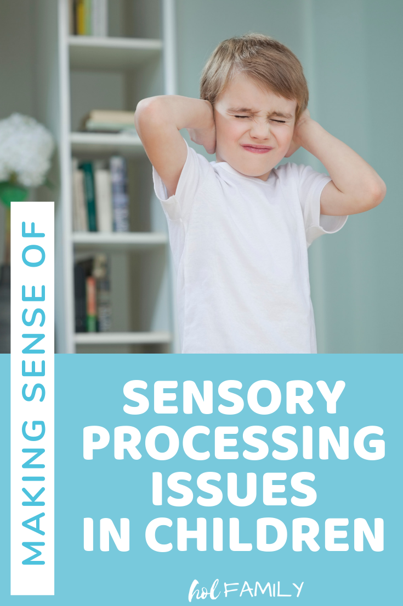

Remember Sensory Sensitivity
Children with autism often have sensory sensitivities. Being mindful of their sensory needs can help create a more comfortable environment for them.
- Ask your friend or someone that knows them if there are any specific sensory issues they experience, such as sensitivity to loud noises, bright lights, or certain textures.
- Avoid situations that may overwhelm them and be understanding if they need to take a break.
- Provide sensory-friendly options when planning activities, such as quieter settings or calming tools.
- Respect their sensory boundaries and never force them into uncomfortable situations.
